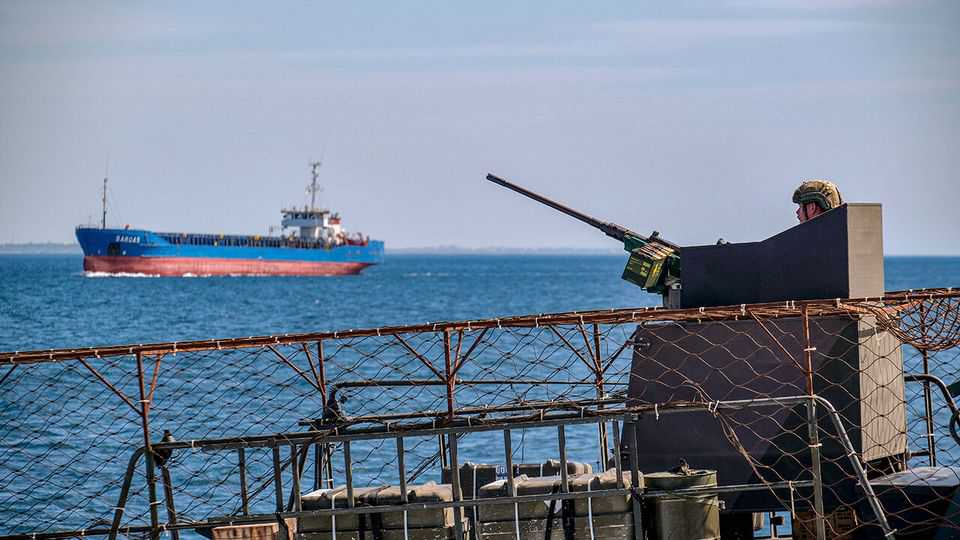

The renewed threat to global grain supplies
Unlike in 2022, both Ukraine’s and Russia’s exports are under attack

Aug 27th 2026
CLOSE TO A third of global wheat exports sail out of Russian and Ukrainian ports on the Black Sea and the Sea of Azov. In 2022, when invading Russian forces attacked Ukrainian infrastructure in the region, the price of wheat and other grains spiked worldwide. It took a Turkish-brokered deal and the establishment of a protected Ukrainian shipping corridor to bring them down. In recent weeks renewed fighting has again been disrupting exports—and this time it is not only Ukraine’s sales that are getting thumped. Analysts have started to ask if a second global grain crunch could be on the way.
In previous attacks Russia fired its missiles at infrastructure in Odessa and other Ukrainian ports. Then, starting in July, it began targeting the merchant ships that sail to them. Few crews are now willing to run the risk. The step up in Russian attacks is in part a response to strikes that Ukraine has been launching against Russian targets. Ukrainian drones have more or less closed the Sea of Azov to Russian shipping. This month Ukraine also badly damaged grain terminals at Russia’s Black Sea port of Novorossiysk—the largest wheat-exporting port in the world, through which over 30% of Russia’s wheat exports pass.

The impact is already stark. In August last year Russia and Ukraine exported 6.3m tonnes of wheat between them. That made up a big dollop of the 16m tonnes that crossed borders around the world that month. This August their combined exports may reach only about 2.5m tonnes, and could fall further if hostilities continue, reckons Ishan Bhanu of Kpler, a data firm. Disruption to agricultural exports leaving the Black Sea is “the worst it has ever been” since the region became a major route for global foodstuffs, says Carlos Mera, an analyst at Rabobank.
Both countries are exploring alternative ways of getting goods to market. They face big difficulties in doing so. During the crisis in 2022 Ukraine began using road and rail to get its grain to the Danube River, along which it could travel to Black Sea ports considered safe from attack, such as Constanta in Romania. But capacity on this route is limited, and particularly so this year because of low water levels. Moreover, farmers elsewhere in eastern Europe grumble that the workaround creates extra demand for shipping and haulage; that pushes up their transport costs even as it reduces demand for their product, notes Joseph Glauber of the International Food Policy Research Institute, a Washington-based group. As for Russia, its agriculture ministry says it is working to send more grain to ports on the Baltic and Caspian seas. But these routes can probably handle only a fraction of the backlog.
What this will mean for international prices is hotly debated. Wheat prices have been rising for weeks, reaching two-year highs in recent sessions (some 25% above their level at the start of the year). Yet they are only about half the level seen at the peak of the crisis in 2022. Several factors have, so far, helped hold prices down. One is the timing of the disruption: importing countries in the northern hemisphere have just finished harvesting their own crops, and thus can postpone some imports, says Mr Bhanu. And 2025 was a bumper year for global wheat production, so many countries still have sizeable stores to draw from.

For the moment, markets are betting that the disruption to Russian and Ukrainian exports will be short-lived. Whether they are right depends on a hotch-potch of variables that are hard to predict, says Mr Mera: developments in the war, water levels in the Danube, how long damaged port facilities take to repair and the whims of insurers, among other things. Experts’ forecasts of how much grain Ukraine will manage to export over the full season, he notes, are currently all over the place.
Whereas last year’s global wheat harvest was bountiful, this year’s seems likely to disappoint. Wheat exports from America, Canada and the European Union will probably fall this year, in part because of drought and in part because farmers bet that other crops would be more profitable, notes Mr Glauber. He says Australia’s wheat crop could fall by more than 20% due to the El Niño weather pattern and increased fertiliser costs (caused by hold-ups in the Strait of Hormuz). The world is still far from the grain crunch of four years ago. But if disruptions in the Black Sea last, prices will keep heading up.■